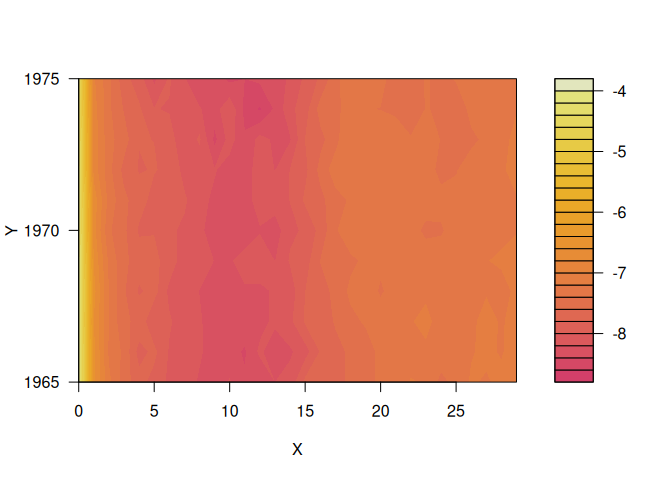
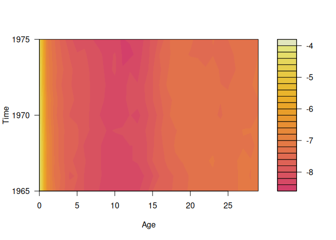
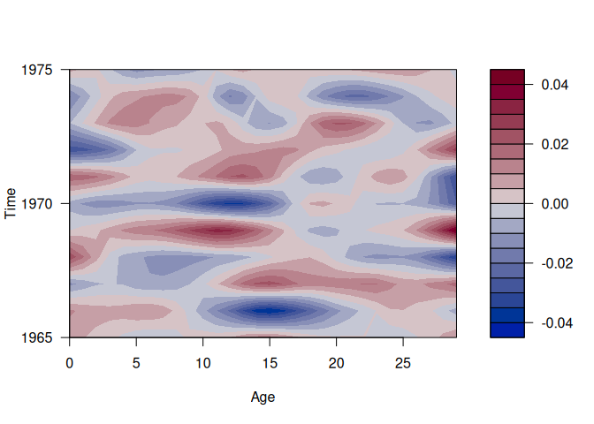
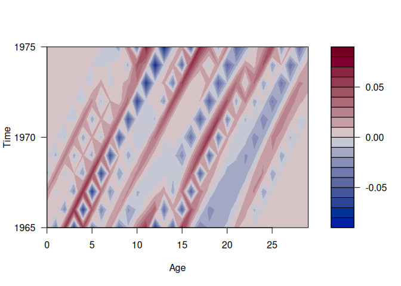

The goal of smoothAPC is to model mortality rates as the sum of four components: a smooth bivariate function of age and time, smooth one-dimensional cohort effects, smooth one-dimensional period effects, and random errors. The model uses bivariate thin plate splines, bivariate lasso-type regularization, and allows for both period and cohort effects.
Installation
You can install the stable version from CRAN:
pak::pak("smoothAPC")You can install the development version of smoothAPC from GitHub with:
# install.packages("pak")
pak::pak("robjhyndman/smoothAPC")Example
library(smoothAPC)
m <- log(demography::fr.mort$rate$female[1:30, 150:160])
#> Registered S3 method overwritten by 'quantmod':
#> method from
#> as.zoo.data.frame zoo
#> Registered S3 methods overwritten by 'demography':
#> method from
#> print.lca e1071
#> summary.lca e1071
plot(m)
sm <- autoSmoothAPC(m)
plot(sm)
plot(sm, "period")
plot(sm, "cohort")